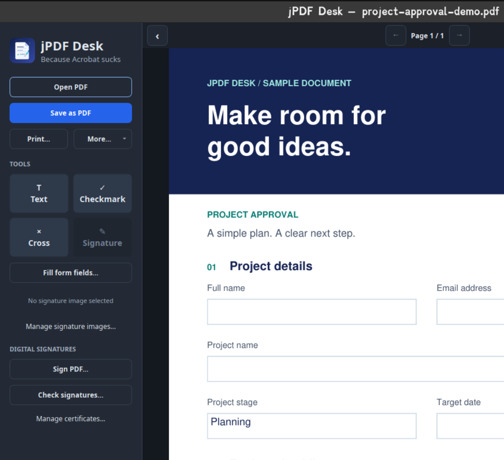

Read & navigate
Zoom in, browse thumbnails and bookmarks, and search selectable text to find what matters.
Your everyday PDF workspace
View, fill, sign, and secure PDFs with a desktop app built for everyday documents.
Linux · Windows · macOS (Apple Silicon)
Open-source project · Desktop workflow

One app, everyday essentials
Tools for reading, completing, and saving your documents.
Zoom in, browse thumbnails and bookmarks, and search selectable text to find what matters.
Edit native form fields, checkboxes, dropdowns, and lists. Place text, checks, or crosses, then move and resize them.
Import a handwritten signature image and keep a personal library for reuse. Sign digitally with a .p12 or .pfx certificate.
Add, remove, or change password protection, edit document metadata, and inspect existing digital signatures.
Save to a new PDF and edit saved annotations again later. Print all pages, a range, or the current page, including unsaved annotations.
Choose system, light, or dark appearance without changing the colors of your PDF.
Bring it to your desktop
Browse published releases for available packages. Not every platform or format may have a prebuilt download.
LINUX
Build options include AppImage, DEB, RPM, Snap, and standalone executables.
Download for Linux Linux installation notesCompatible system libraries may be required, including for AppImages. Physical printing requires CUPS.
WINDOWS
Build options include an executable and an .exe installer.
Download for Windows Windows installation notesThe installer offers default-app registration without automatically changing your current PDF app.
macOS · APPLE SILICON
The current build produces an Apple Silicon .app bundle, not a DMG installer.
Download for macOS macOS installation notesCI bundles are unsigned and not notarized. An Intel Mac build is not currently provided by the build preset.
A good place to start
From opening your first PDF to forms, printing, passwords, and signatures.
Installation, build instructions, architecture, libraries, and CI details.
Report a bug, suggest a feature, or join development on GitHub.
A signature image is not a cryptographic digital signature and can be extracted from a PDF. A valid digital integrity check does not necessarily establish trust in the signer. Finish editing before signing: later changes may invalidate signatures.
Read the signing and certificate security notes